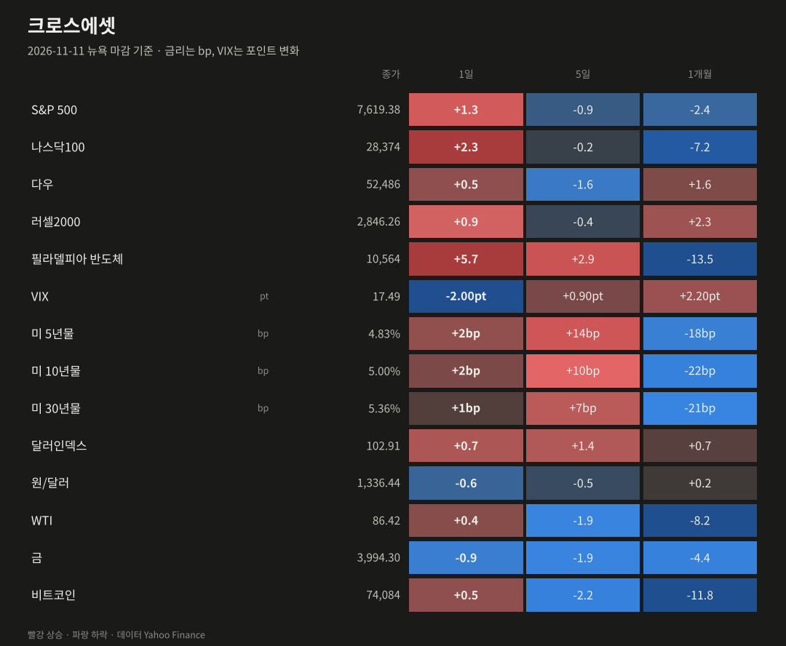
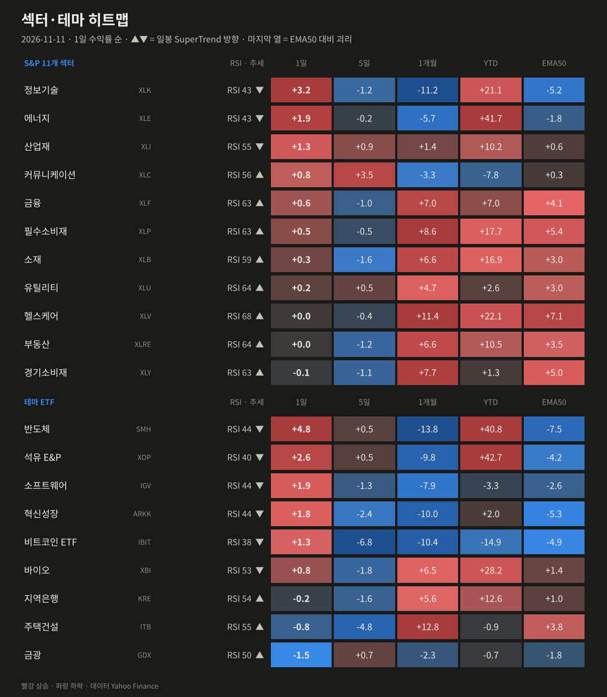
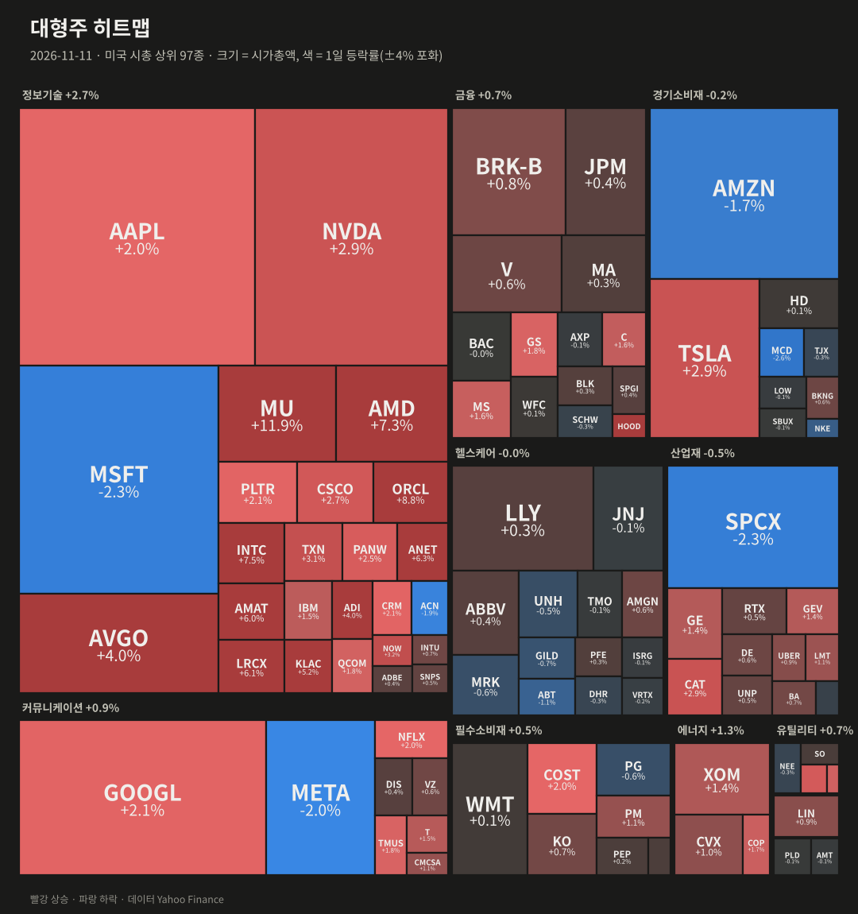
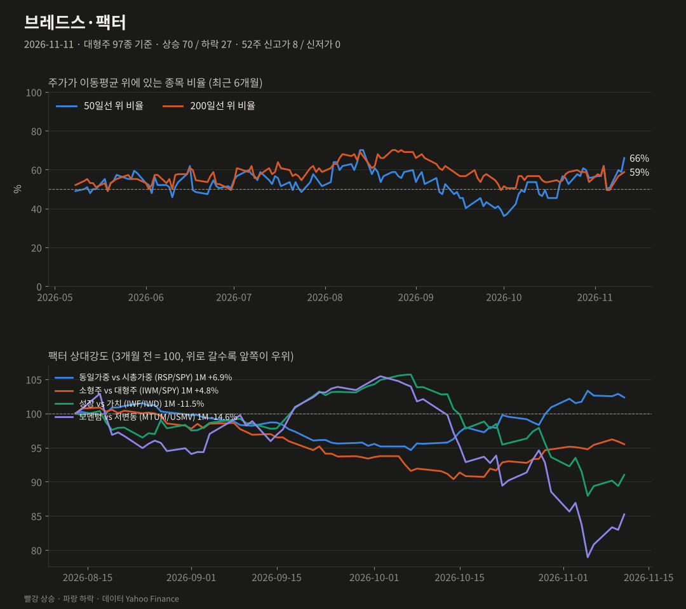
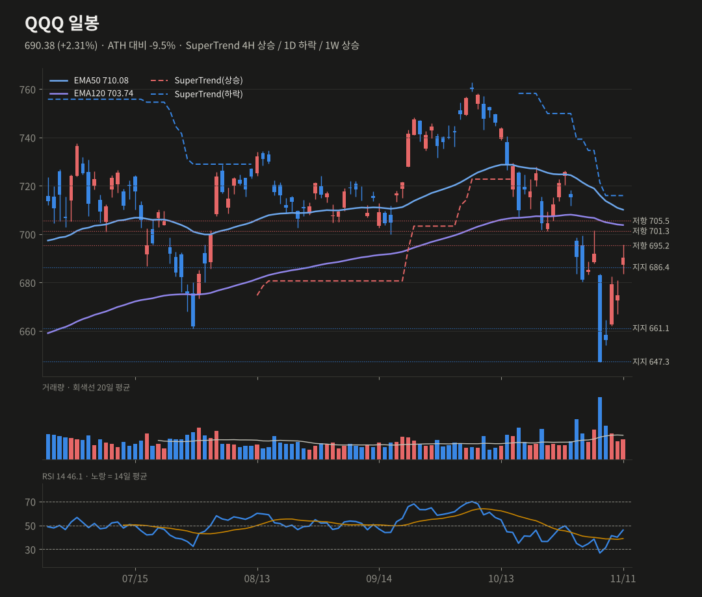
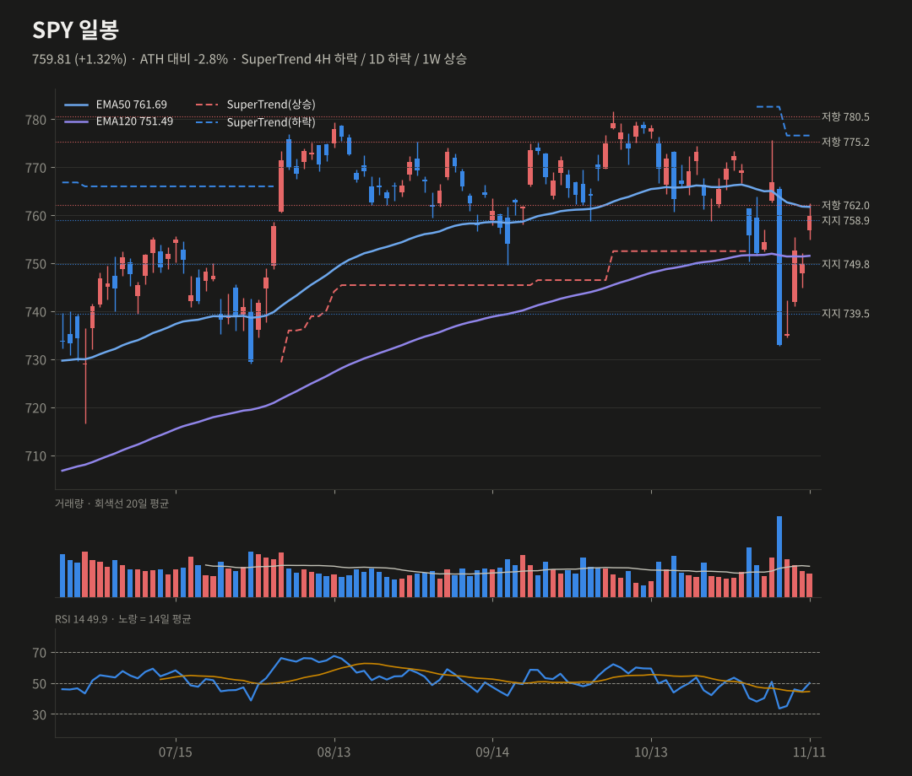
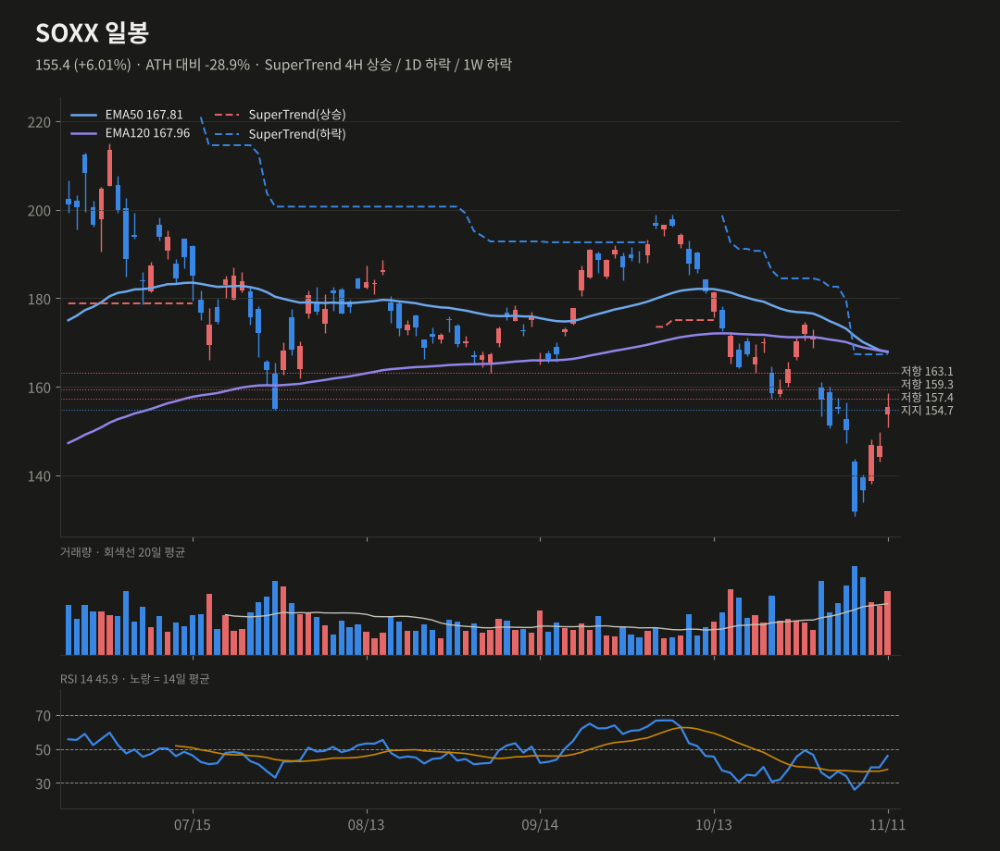

미증시 마감 브리핑
11/11(수) 뉴욕 마감 기준 · 생성 2026-11-12 07:42 KST
코어위브 호실적에 AI 반도체가 다시 불붙어 SOX +5.7%, 나스닥100 +2.3%였어요. 애플은 시총 5.16조 달러로 사상 최고를 찍었어요.
S&P 5007,619.38+1.31%
나스닥10028,374+2.28%
다우52,486+0.49%
러셀20002,846.26+0.88%
반도체(SOX)10,564+5.66%
VIX17.49-2.00pt
미 10년물5.00%+1.50bp
원/달러1,336.44-0.55%
요약
- 코어위브 호실적에 SOX +5.7%, MU +11.9%로 AI 반도체가 반등했어요. 오른 종목은 70/97이에요.
- 애플이 사상 최고(시총 5.16조 달러)를 찍었어요. 반면 MSFT·META·AMZN은 약했어요.
- QQQ와 SOXX가 4H 추세 상승 전환, SPY는 일봉 EMA120 회복으로 단기 확률을 올렸어요.
- 시간외는 소폭 차익매물이 나왔고, 12월 인상은 거의 전부 반영됐어요.
종합 판단
선거 후 투매의 핵심이었던 'AI 인프라 수요 둔화' 우려를 코어위브 실적이 반박했어요. 반도체·메모리가 가장 강하게 반등했고, 브레드스도 11월 들어 최고예요. QQQ와 SOXX가 4H 추세를 되찾아 단기 확률을 올렸어요. 다만 일봉 추세선(SuperTrend)은 아직 모두 하락이고, 12월 인상이 거의 확실한 금리 5% 환경이라 스윙은 단계적으로만 올렸어요.
선거 후 투매의 핵심이었던 'AI 인프라 수요 둔화' 우려를 코어위브 실적이 반박했어요. 반도체·메모리가 가장 강하게 반등했고, 브레드스도 11월 들어 최고예요. QQQ와 SOXX가 4H 추세를 되찾아 단기 확률을 올렸어요. 다만 일봉 추세선(SuperTrend)은 아직 모두 하락이고, 12월 인상이 거의 확실한 금리 5% 환경이라 스윙은 단계적으로만 올렸어요.
무엇이 시장을 움직였나
- 코어위브: 3분기 매출이 +168%(37억 달러)였고, 연간 가이던스 130~133억 달러가 예상 128.6억 달러를 넘었어요. 'AI 인프라 수요 둔화' 우려를 정면으로 반박한 실적이에요.
- 반도체·메모리 급등: MU +11.9%, ORCL +8.8%, INTC +7.5%, AMD +7.3%, ANET +6.3%, LRCX +6.1%였어요. 코히런트(+18%) 등 광통신·전력(블룸 에너지 +13%)도 함께 올랐어요.
- 엔비디아는 이틀 매도 뒤 반등했어요. 다만 베어드가 '중립'으로 하향하고 모건스탠리가 최선호주에서 제외해 부담이 남아 있어요.
- 약세: MSFT −2.3%, META −2.0%, AMZN −1.7%로 하이퍼스케일러는 약했고, 경기소비재(−0.1%)만 하락했어요.
- 매크로: 10월 소매판매가 +0.2%로 1년 만에 가장 약했어요. 12월 인상은 사실상 전부 반영됐고(50bp 확률 약 11%), 10년물은 5.00% 근처예요. VIX는 17.5로 내려왔어요.
장 마감 후·시간외
- 시간외는 차익매물이 나와 소폭 약세예요. QQQ 685.5(−0.7%), SPY 756.8(−0.4%), SOXX 153.2(−1.4%), DRAM 44.2(−1.5%)예요.

| 자산 | 종가 | 1일 | 5일 | 1개월 |
|---|---|---|---|---|
| S&P 500 | 7619.38 | +1.31% | -0.90% | -2.38% |
| 나스닥100 | 28374.25 | +2.28% | -0.22% | -7.18% |
| 다우 | 52486.49 | +0.49% | -1.63% | +1.58% |
| 러셀2000 | 2846.26 | +0.88% | -0.37% | +2.26% |
| 필라델피아 반도체 | 10564.11 | +5.66% | +2.88% | -13.47% |
| VIX | 17.49 | -2.00pt | +0.90pt | +2.20pt |
| 미 5년물 | 4.827 | +2.0bp | +13.8bp | -18.0bp |
| 미 10년물 | 4.998 | +1.5bp | +10.4bp | -21.9bp |
| 미 30년물 | 5.356 | +0.6bp | +7.4bp | -20.7bp |
| 달러인덱스 | 102.91 | +0.66% | +1.38% | +0.71% |
| 원/달러 | 1336.44 | -0.55% | -0.48% | +0.17% |
| WTI | 86.42 | +0.44% | -1.93% | -8.20% |
| 금 | 3994.3 | -0.89% | -1.93% | -4.38% |
| 비트코인 | 74084.41 | +0.49% | -2.19% | -11.82% |

| 섹터·테마 | 1일 | 5일 | 1개월 | YTD | RSI | 일봉 추세 |
|---|---|---|---|---|---|---|
| 반도체 SMH | +4.82% | +0.53% | -13.80% | +40.8% | 44 | 하락 |
| 정보기술 XLK | +3.23% | -1.21% | -11.17% | +21.1% | 43 | 하락 |
| 석유 E&P XOP | +2.63% | +0.47% | -9.85% | +42.7% | 40 | 하락 |
| 소프트웨어 IGV | +1.89% | -1.28% | -7.88% | -3.3% | 44 | 하락 |
| 에너지 XLE | +1.86% | -0.24% | -5.70% | +41.7% | 43 | 하락 |
| 혁신성장 ARKK | +1.78% | -2.36% | -9.98% | +2.0% | 44 | 하락 |
| 비트코인 ETF IBIT | +1.34% | -6.82% | -10.38% | -14.9% | 38 | 하락 |
| 산업재 XLI | +1.33% | +0.89% | +1.36% | +10.2% | 55 | 하락 |
| 바이오 XBI | +0.81% | -1.75% | +6.48% | +28.2% | 53 | 하락 |
| 커뮤니케이션 XLC | +0.78% | +3.47% | -3.28% | -7.8% | 56 | 상승 |
| 금융 XLF | +0.58% | -0.96% | +6.95% | +7.0% | 63 | 상승 |
| 필수소비재 XLP | +0.46% | -0.53% | +8.62% | +17.7% | 63 | 상승 |
| 소재 XLB | +0.32% | -1.63% | +6.64% | +16.9% | 59 | 상승 |
| 유틸리티 XLU | +0.21% | +0.48% | +4.66% | +2.6% | 64 | 상승 |
| 헬스케어 XLV | +0.04% | -0.37% | +11.37% | +22.1% | 68 | 상승 |
| 부동산 XLRE | +0.02% | -1.17% | +6.60% | +10.5% | 64 | 상승 |
| 경기소비재 XLY | -0.05% | -1.10% | +7.68% | +1.3% | 63 | 상승 |
| 지역은행 KRE | -0.19% | -1.59% | +5.63% | +12.6% | 54 | 상승 |
| 주택건설 ITB | -0.77% | -4.84% | +12.77% | -0.9% | 55 | 상승 |
| 금광 GDX | -1.48% | +0.73% | -2.33% | -0.7% | 50 | 상승 |

| 상승 상위 | 1일 | 거래량(20일 대비) | 하락 상위 | 1일 | 거래량 |
|---|---|---|---|---|---|
| MU | +11.89% | x1.15 | MCD | -2.61% | x1.21 |
| ORCL | +8.82% | x0.87 | SPCX | -2.33% | x1.0 |
| INTC | +7.52% | x0.87 | MSFT | -2.26% | x1.09 |
| AMD | +7.32% | x1.4 | META | -1.97% | x0.63 |
| ANET | +6.30% | x0.99 | ACN | -1.88% | x0.53 |
| LRCX | +6.07% | x0.78 | AMZN | -1.74% | x0.74 |

대형주 97종: 상승 70 / 하락 27 · 50일선 위 66.0% (전일 58.8%, 5일 전 61.9%) · 200일선 위 58.8% · 52주 신고가 8 / 신저가 0
오른 종목 70, 내린 종목 27로 폭넓은 상승이었어요. SMA50 위 종목 비율은 58.8%에서 66.0%로 올라 11월 들어 가장 높아요. 다만 동일가중은 시총가중보다 0.51%p 약해 대형 기술주 주도였어요.
| 팩터 스프레드 | 1일 | 5일 | 1개월 |
|---|---|---|---|
| 동일가중 vs 시총가중 (RSP/SPY) | -0.51% | +0.61% | +6.88% |
| 소형주 vs 대형주 (IWM/SPY) | -0.42% | +0.59% | +4.76% |
| 성장 vs 가치 (IWF/IWD) | +1.83% | -0.53% | -11.49% |
| 모멘텀 vs 저변동 (MTUM/USMV) | +2.73% | +1.75% | -14.60% |
기술적 분석 · 확률
TradingView 설정과 맞춘 지표(EMA50·EMA120, SuperTrend ATR20×4, RSI14, MACD 12/26/9). 확률은 차트 기반 추정치예요.
QQQ 690.38 +2.31%
SuperTrend 4H 상승 / 1D 하락 / 1W 상승 · RSI 46.06
단기 반등 60% (+5) · 스윙 상승 40% (+5)
4H SuperTrend가 상승으로 전환했고 4H RSI도 50을 넘었어요. 일봉 히스토그램은 절반으로 줄었어요(−3.87 → −1.87). 시간외 685.5로 686.4 지지를 다시 시험 중이에요. 일봉 EMA120(703.7)과 SuperTrend(715.9)가 위에 있어요.
상방 695.3 돌파 → 701.3~705.5
하방 686.4 이탈 → 672.1(주봉 EMA50)
SuperTrend 4H 상승 / 1D 하락 / 1W 상승 · RSI 46.06
단기 반등 60% (+5) · 스윙 상승 40% (+5)
4H SuperTrend가 상승으로 전환했고 4H RSI도 50을 넘었어요. 일봉 히스토그램은 절반으로 줄었어요(−3.87 → −1.87). 시간외 685.5로 686.4 지지를 다시 시험 중이에요. 일봉 EMA120(703.7)과 SuperTrend(715.9)가 위에 있어요.
상방 695.3 돌파 → 701.3~705.5
하방 686.4 이탈 → 672.1(주봉 EMA50)
SPY 759.81 +1.32%
SuperTrend 4H 하락 / 1D 하락 / 1W 상승 · RSI 49.86
단기 반등 55% (+5) · 스윙 상승 45% (+5)
일봉 EMA120(751.5)을 다시 회복했고 RSI도 50 바로 아래(49.9)까지 올라왔어요. 4H RSI는 50을 넘었어요. 일봉 EMA50(761.7)과 4H SuperTrend(765.7)가 바로 위 저항이에요.
상방 762.0 돌파 → 765.7, 775.2
하방 749.8 이탈 → 739.5
SuperTrend 4H 하락 / 1D 하락 / 1W 상승 · RSI 49.86
단기 반등 55% (+5) · 스윙 상승 45% (+5)
일봉 EMA120(751.5)을 다시 회복했고 RSI도 50 바로 아래(49.9)까지 올라왔어요. 4H RSI는 50을 넘었어요. 일봉 EMA50(761.7)과 4H SuperTrend(765.7)가 바로 위 저항이에요.
상방 762.0 돌파 → 765.7, 775.2
하방 749.8 이탈 → 739.5
SOXX 155.4 +6.01%
SuperTrend 4H 상승 / 1D 하락 / 1W 하락 · RSI 45.88
단기 반등 60% (+5) · 스윙 상승 35% (+5)
+6.0%(거래량 2.9배)로 4H SuperTrend가 상승 전환하고 주봉 EMA50(151.8)도 되찾았어요. 일봉 EMA 밀집대(167.8~168.0)와 SuperTrend(167.3)가 다음 관문이에요.
상방 159.3 돌파 → 163.1, 167.3~168.0
하방 151.8 이탈 → 146.6
SuperTrend 4H 상승 / 1D 하락 / 1W 하락 · RSI 45.88
단기 반등 60% (+5) · 스윙 상승 35% (+5)
+6.0%(거래량 2.9배)로 4H SuperTrend가 상승 전환하고 주봉 EMA50(151.8)도 되찾았어요. 일봉 EMA 밀집대(167.8~168.0)와 SuperTrend(167.3)가 다음 관문이에요.
상방 159.3 돌파 → 163.1, 167.3~168.0
하방 151.8 이탈 → 146.6
DRAM 44.85 +10.36%
SuperTrend 4H 하락 / 1D 하락 / 1W 상승 · RSI 44.77
단기 반등 55% (+5) · 스윙 상승 30%
+10.4%로 44.4 매물대를 넘었고 4H MACD도 골든크로스예요. 4H SuperTrend(46.2)와 주봉 EMA50(46.6)이 바로 위에 겹쳐 있어요. 이 구간을 돌파해야 스윙이 개선돼요.
상방 46.6 돌파 → 48.7
하방 44.4 이탈 → 41.5
SuperTrend 4H 하락 / 1D 하락 / 1W 상승 · RSI 44.77
단기 반등 55% (+5) · 스윙 상승 30%
+10.4%로 44.4 매물대를 넘었고 4H MACD도 골든크로스예요. 4H SuperTrend(46.2)와 주봉 EMA50(46.6)이 바로 위에 겹쳐 있어요. 이 구간을 돌파해야 스윙이 개선돼요.
상방 46.6 돌파 → 48.7
하방 44.4 이탈 → 41.5



일정
- 엔비디아 이사회 조사·애널리스트 조정
- 12/9 FOMC(인상 거의 확실, 50bp 약 11%)
- 11월 후반 엔비디아 실적 일정 확인
출처
- Stock Market Today (Nov. 11, 2026): Nasdaq, S&P 500 gain after CoreWeave earnings beat; Apple hits new record (TheStreet)
- Nasdaq 100 Jumps 2.8% on CoreWeave, AI Rebound: Stock Market Today (Benzinga)
- Micron Stock Surges Nearly 12% as CoreWeave Earnings Revive AI Chip Rally (Coinpaper)
데이터 Yahoo Finance·Nasdaq. 색은 한국식(빨강 상승·파랑 하락). 투자 판단의 참고 자료예요. 지난 브리핑